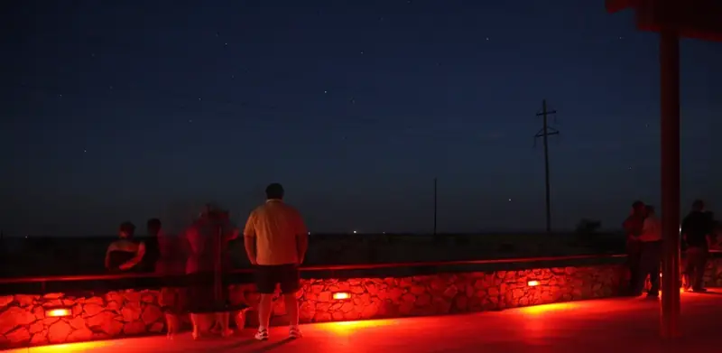
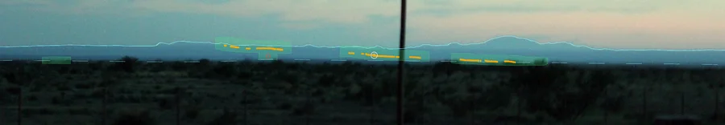
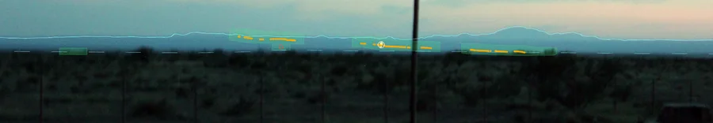

The instrumented field studies have all found that many lights seen from the Viewing Area are vehicle headlights on US-67. Whether any lights remain once those are removed is still an open question. It can only be answered with careful, timed observation.
In short.
Many lights seen from the Viewing Area are car headlights, trains, tower lights, towns, planes or bright planets.
Apart from the highway beside the platform (US-90, to the west-northwest), only short stretches of three roads are in view: US-67 at 229°–238° true and RM 2810 at 253°–259° true, both just below the mountain skyline, and Nopal Road, a county road 7–13 km away at 178°–213°.
A car pointing at the platform can look brighter than any star, then fade as the road turns.
Photos from the platform confirm the map: every car light in a twilight sequence sits on the modelled visible road, within about 0.01°, and none on the stretches the model says are hidden. See the photos.
Some reported lights have never been explained. Careful records are how they get taken seriously.
The app and the identifier do this checking for you.
The full method is written up in our paper, with its Supporting Information and an animation of one car seen from the platform.
What observers describe
James Bunnell, a retired aerospace engineer, ran automated camera stations on ranches around Mitchell Flat for years. He describes the lights as orbs that brighten and fade, change colour, move or hover, and split or merge. They are usually yellow-orange, sometimes green, blue or red, and usually above the brush but below the mesas. He counted about 9.5 such lights a year, spread over about five nights. He believes his cameras caught only about half of them.1

Observers at the Viewing Area, 2009. Photo: Jon Hanson, 9 May 2009, via Wikimedia Commons, CC BY 2.0, cropped.
The field studies
Student physics team, 2004. In May 2004, twelve physics students from the University of Texas at Dallas spent several nights at the Viewing Area. Their equipment included traffic counters, radios, lasers and high-speed video.2 According to their report, the lights southwest of the Viewing Area rose and fell with traffic on US-67 and moved in straight lines along the road. When team members flashed headlights from the highway, those showed up at the Viewing Area looking like a Marfa Light. They concluded that the lights they saw came from vehicles.3
Spectroscopy, 2008. Karl Stephan and colleagues at Texas State University recorded light spectra over 20 nights in May 2008. Their instruments identified the lights they recorded as ordinary: vehicle headlamps, distant streetlamps and fires. They noted that genuine unexplained lights are rare, so a short campaign may simply miss them.4,3
Camera stations, 2000s. Bunnell aimed some cameras away from both US-67 and the Chinati Mountains, specifically to exclude headlights. He reports lights he could not explain.1,2 His work is self-published and hasn't been through independent peer review, but it is the longest continuous record there is.
Mirages and refraction
The most common physical explanation is atmospheric refraction. On clear, calm nights the ground loses heat fast, and air near the surface gets colder than the air above it. Light passing through that layer bends downward, so distant lights can appear higher, stretched, or doubled. Marfa's daily temperature range, often 40–50 °F, makes such inversions common.5 Our model (Figure 6) finds that refraction shifts these lights by only about a tenth of a degree, and that any doubled images are far too close together for the eye to separate.
How much does the air bend light?
Surveyors measure this bending with a refraction coefficient k. The textbook value is 0.13. Measured close to the ground, k swings from about −4 on hot afternoons to +16 around sunset.6 Humidity barely affects how visible light bends. It matters for haze and dimming, not for bending.7
What our terrain model shows, in eight figures
We worked out exactly which parts of the landscape you can see from the platform. The model uses government elevation data,12 the curve of the Earth and the bending of light, then adds every road, railroad, lit tower and town we could find in public records.10 The figures below walk through what that shows, one step at a time. Tap any figure to open it full size.
How to read it. The star is the Viewing Area. Each thin grey line is a sight line, drawn every half degree across a 120° fan from south-southeast to west (157°–277° true). The lines that reach US-67 stop there. Roads are coloured by whether a car's headlight would be in direct view from the platform: red and orange for US-67, pink for other roads, grey for hidden. Blue lines are railroads. Diamonds are lit towers, filled when the top light is in view.
What it shows. Of the 64.5 km of US-67 between Shafter and Marfa, only about 9.5 km is in view, and another 0.5 km is marginal. Almost all of it lies in one band 24–40 km away, just north of the road's high point, at bearings of 229°–238° true. Everything nearer to Marfa is hidden behind a low rise in the flat. The same test found a second road that most accounts ignore: RM 2810, Pinto Canyon Road, which is in view for about 13 km of its 52 km as it climbs into the Chinati foothills at 253°–259°. Closer in, about 5 km of Nopal Road, a county road that runs south across the flat from US-90, is in view 7–13 km away at 178°–213°. The Union Pacific line runs right past the platform, and the Texas Pacifico line to Presidio is in view 4–8 km to the south.
Why it matters. This map is the basis for everything else on this page. A light below the skyline on a bearing with no road, track or tower in view has no catalogued ordinary source. In practice that means roughly 239°–251° and 260°–277° true, plus the gaps between the railroad and Nopal Road to the south. Even there, aircraft, ranch lights and other uncatalogued sources remain possible; use the known-source mask in Figure 2 to check.
Figure 2. The view from the platform and the known-source mask.Open full size · PDF
What you actually see
How to read it. This is the view from the platform, drawn the way your eye sees it: bearing across, height above level up. Heights are stretched about 20 times, so the flat, low landscape is readable. The black line is the mountain skyline. Grey layers are ridges at different distances. Coloured dots are where headlights would appear on the roads and track in view. The lower panel zooms into the US-67 and RM 2810 sector.
What it shows. Headlights on US-67 appear as a slanting chain just below the Chinati skyline, never above it. RM 2810's lights sit even closer to the skyline, further west. Two lit towers stand right among them: an 89 m tower at 230°, in front of the highway, and a 106 m power-line tower at 256°, among the RM 2810 lights. An 82 m tower on a ridge 56 km away at 259° shows just above the skyline. Skyglow from Presidio, Ojinaga, Shafter and Marfa, and the tethered radar balloon to the west-northwest, complete the list of sources that stay in one place.
The known-source mask (green) marks every place in this view where a catalogued ordinary light could appear. The name comes from astronomy, where known objects are masked out of an image before searching it for something new. It allows for any refraction from none (k = 0) to a strong inversion (k = 1), and for the observer's measurement error. A light inside the mask has an ordinary candidate that must be ruled out first. A light outside it has none that we know of: that makes it worth recording carefully, not proof of anything. How big the mask is depends on how well you measure. Just below the skyline, it covers about a third of the view with bearings from a photo (±0.3°, solid green), but about three-quarters with a hand compass (±3°, dashed outline). Careful measurement is what makes a sighting testable.
How to read it. The top panels are the median U.S. headlamp beam, low and high, from a market-weighted survey of production lamps by the University of Michigan Transportation Research Institute.8 Darker grey means more light. Each dot shows where the Viewing Area falls in the beam of a car on US-67 (orange) or RM 2810 (pink) driving toward the platform. The bottom panel turns that into brightness on the astronomers' magnitude scale (smaller numbers are brighter), for every stretch of US-67 that is in view: northbound headlamps in orange, southbound tail lamps in blue. The dashed line is Sirius, the brightest star; the blue band is the faintest point of light the naked eye can see on a dark night, for a range of observers and sky conditions.14
What it shows. US-67 points almost straight at the platform, so northbound cars usually have the Viewing Area only 3°–33° off their heading. They should be naked-eye lights over nearly all of the road in view, typically as bright as a second- or third-magnitude star, and on the straight at about 233.7° brighter than Sirius. That holds for dim and bright lamps and for hazy and clear air. The platform sits near the top of the low beam, so rises, dips and bends in the road make a car brighten and fade, typically by about a magnitude during one glimpse and sometimes by four or five. Cars driving away show red tail lamps, which are near the limit of vision: invisible at the legal minimum, borderline at the legal maximum, and visible when the driver brakes.
Limits. The beam survey describes lamps of around 2004; modern LED lamps differ, and no comparable survey of tail lamps exists, so those are bracketed by the federal standard.8
How to read it. A northbound car driving from Shafter to Marfa at highway speed. The top panel is its bearing from the platform over time, orange where its headlamps are in view and grey where hills hide it. The bottom panel is its brightness.
What it shows. The car is in view for about five and a half minutes out of fourteen, in eighteen separate glimpses of typically a quarter of a minute. Each time it appears a little further along, drifts sideways by about a degree a minute, brightens and fades by about a magnitude, and vanishes. One ordinary car, seen from here, behaves like a light that appears, wanders and blinks out. With the traffic US-67 carries, two or three cars heading north would be in view at any moment on an average hour; fewer late at night.
Figure 5. Terrain cross-sections along four bearings.Open full size · PDF
Why so little road is in view
How to read it. Each panel is a slice through the landscape along one bearing, from the platform (left) out to 80 km. The ground has been adjusted for the curve of the Earth and normal refraction, so that every sight line from your eye is a straight line from the top-left corner. Coloured ground is in direct view. Triangles mark where a road or track crosses the slice.
233.6°: the US-67 crossing about 32 km out sits on ground in view. This is the straight where cars point at the platform.
240°: US-67 crosses about 22 km out, in a hollow of the flat. Slightly higher ground in front hides it, so no car there can be seen.
255.6°: RM 2810 crosses several times as it climbs into the Chinati foothills, and those crossings are in view, just below the skyline.
190°: no highway at all, but the Texas Pacifico track is in view about 5 km out.
What it shows. The flat is not flat. Differences of a few tens of metres, spread over many kilometres, decide whether a light 30 km away is visible or hidden. That is why the visible road comes in short pieces, and why a car can blink in and out as it drives. The full sight-line report lets you explore a cross-section on any bearing.
How to read it. Refraction is described by a coefficient k. Normal air is about 0.13. On calm, clear nights the ground cools and a temperature inversion can push k toward 1 or beyond. The top axis gives the matching change in temperature with height. The left panel shows how much of each road comes into view as k rises. The right panel shows how much higher a light appears when k changes, depending on how far away it is.
What it shows. For US-67, even a strong inversion (k = 1) adds only about 1.6 km of visible road: the stretch near Marfa stays hidden. Tracing rays through realistic night-time temperature layers, instead of a single k, gives the same picture: at most about 1.5 km more road, with lights lifted by up to about 0.12°. RM 2810 is more sensitive, because it runs just below the skyline, where a small lift brings more of it into view. A change of 1 in k lifts a light 30 km away by about 0.13°, a quarter of the Moon's width. Refraction can raise and stretch distant lights. A warm layer a few tens of metres up can even split one lamp into several images, but in our ray tracing they are only a few arcseconds apart, far too close for the eye to separate. Refraction cannot bring the hidden stretch of US-67 into view.5,6
Where ordinary lights are common, and where they are rare
How to read it. This is the same view as Figure 2, but the shading now shows how often an ordinary light is expected to pass through each part of it on a typical clear night. Darker blue means busier. Hatched bars are fixed lights: towers, towns and skyglow, and the radar balloon when it is up. Unshaded ground gets fewer than one catalogued ordinary light every 100 hours.
What it shows. Not every source is equally busy. US-67 carries over a thousand vehicles a day (up to about 2,300 in recent years), and with 2% of that traffic in a night hour its northbound lane sends up to about 23 cars an hour through its stretch of the view. RM 2810 carries a few dozen vehicles a day, so fewer than one an hour shows up there; Nopal Road has no traffic count, and we assume a similar few dozen. The Texas Pacifico line has at most one night train. Weighted this way, and with bearings from a photo, more than three-quarters of the band just below the skyline is quiet: fewer than one ordinary light per 100 hours. A hand-compass bearing (±3°) is too rough for this map to help much: at that precision about three-quarters of the band lies within reach of some ordinary source (Figure 2, dashed outline).10,11
Why it matters. A light in a quiet area is the kind most worth a careful record. The identifier and the app use this map to tell you whether you are looking at a busy or a quiet spot.
Figure 8. Checking the model against real photos.Open full size · PDF
Does the model match reality?
How to read it. Panel a is one of ten telephoto photos taken from the Viewing Area on 21 November 2018, at dusk. The white line is the modelled skyline, the dashed lines are modelled ridge lines, and the yellow dots are where the model says US-67 is in view. The circled lights are cars. Panel b is a 45-second exposure: each car has drawn a streak, and the circles are the modelled road. Panel c compares how far each light sits from the modelled road (red) with random points in the same part of the view (grey).
What it shows. We lined each photo up with the skyline, which fixes where the camera pointed to about a hundredth of a degree. Then we asked where the lights sit. The short exposures show eight separate sightings of vehicles (the same car in frames a few seconds apart counts once). Their median distance from the stretch of US-67 the model says is visible is 0.0085°, about 4 m at 26 km. Random points in the same part of the view are typically 0.28° away, and the chance of eight sightings landing this close by accident is about 3 in a million. About half of the road inside these frames is hidden according to the model, and no light appeared there. One car moved 179 m in 6 seconds, about 107 km/h. A streak found in the 45-second exposure without using the model follows the modelled road to a median of 0.005°. The sun in a sunset frame from the same session showed that the camera clock ran 59 minutes ahead, so the photos were taken at 18:12–18:26 CST.
What it doesn't show. The camera's pointing was fitted to the model's own skyline, because no stars show in these twilight frames, so this is a strong consistency check rather than a fully independent one. It does not test RM 2810 or the brightness model, and it cannot measure refraction. A star-calibrated camera and photos toward 240° and 253°–259° are the next step (see the planned experiments). Method: publication note 9.
What cars look like from the platform
These are the lights behind Figure 8, as you would see them. Each small light is a car on US-67, 25 to 33 km away, photographed from the Viewing Area through a 210 mm telephoto lens 15 to 30 minutes after sunset. At this distance a car's two headlights merge into one point.
What to take from it. A car on US-67 is a small, steady, warm-white point just below the mountains that drifts slowly sideways, often in company with others. Near 233.7° it can flare much brighter for a few seconds as the road points at you. A light that behaves like this matches a vehicle and should be screened out first. A light that doesn't, especially one in a quiet part of Figure 7, is the kind worth reporting. For a night at the platform, see Visiting and observing.
Dust on the lens shows up as soft dark blobs in the sky, and a hair on the sensor as a dark squiggle, as in these photos. Both stay in the same place in the frame when you move the camera. A light on the land does not.
Testing the model against photographs
A model of where ordinary lights can appear is only worth something if real photos agree with it. We test it three ways, from the most controlled to the least.
1. Our own photographs, 21 November 2018
Ten frames from the platform with a 210 mm lens, taken at dusk so the skyline is sharp. Each frame is lined up on the modelled skyline (residuals of about 0.01°), then every light below the skyline is measured. Eight independent lights were found. Their median distance from the modelled US-67 headlight positions is 0.008°, against 0.28° for lights placed at random in the same band (Monte Carlo p ≈ 0.0002), and all eight fall on stretches the model says are in view (p ≈ 0.005 if the model had no predictive power). Two cars drew streaks in a 45-second exposure that run along the modelled road to within 0.016°. Details are in the paper and its supplement.
2. The photo checker against the research pipeline
The photo checker on this site is a separate program written for the browser. Given the same six frames and nothing but the files, it finds the same pointing as the research code:
Frame
Bearing, checker
Bearing, pipeline
Tilt, checker
Tilt, pipeline
Lens difference
p04
233.652°
233.647°
−0.247°
−0.249°
0.8 %
p05
233.759°
233.752°
−0.207°
−0.212°
0.5 %
p06
234.811°
234.809°
−0.089°
−0.095°
0.1 %
p08
234.817°
234.813°
−0.054°
−0.056°
0.2 %
p10
234.636°
234.631°
−0.059°
−0.060°
0.2 %
p13
234.073°
234.070°
−0.261°
−0.287°
0.2 %
Bearings agree to 0.007° and tilts to 0.03°, well inside the ±0.3° photo-quality mask. The car lights land on the same spots (for example 233.778° against 233.771°). The answer is the same when the file is converted to PNG, WebP, TIFF or HEIC, including copies with the camera details stripped out, where the checker works out the lens from the skyline alone (within 0.1 % here).
3. Photographs published by others
We traced 39 published photographs said to show the lights (see the catalogue) and ran the thirteen most promising through the checker. Two of them, a pair taken by Nicolas Henderson on 26 July 2014 and shared under a Creative Commons licence, line up on the mountains to ±0.03°. In both, the light sits on the stretch of US-67 that is in view from the platform, about 31–33 km away, and it moves 0.15° along the road between frames taken 97 seconds apart.

Henderson's first frame, lined up by the checker. Cyan: the modelled skyline. Orange: where US-67 headlights can appear. Green: the known-source mask. White ring: the light in the photo. Photo: Nicolas Henderson, 26 July 2014, CC BY 2.0; cropped, brightened and overlaid by us.

The second frame, 97 seconds later. Photo: Nicolas Henderson, 26 July 2014, CC BY 2.0; cropped, brightened and overlaid by us.
A third, Rob Pettengill's Milky Way photo of 15 August 2015, can be pointed from the stars (six stars and Saturn fit to 3 pixels). Its "triangle of lights at the horizon" lies at about 185° true, some 30° left of the US-67 stretch, where the Texas Pacifico railway and Nopal Road are in view. Because the lens is very wide and distorts the edges, its position is only good to about ±1°, so this is a compass-quality answer. The other ten could not be placed. Seven have no usable skyline or identifiable stars, or survive only as small, heavily processed copies. One is a star-trail control, one was taken beside US-67 rather than from the platform, and one points southeast, outside the modelled sector.
What this shows, and what it doesn't. Every published photo that could be placed precisely shows a light exactly where cars on US-67 appear. That is consistent with the field studies, but it is a small sample, and the photos people choose to publish are not a random sample of what people see. No photo here shows a light outside the known-source mask. That is not proof that such lights don't exist, only that none of these photographs records one well enough to tell.
How to take a photo that can be checked: include the mountain skyline (dusk, moonlight, or a long exposure), keep the original file with its camera data, note the time, don't crop or zoom digitally, and, if you can, include a lit tower or a bright star in the frame.
How you can help
Use the app at the Viewing Area. It tells you what each light is likely to be, and it works without phone signal.
Measure carefully. The Sky finder turns your phone into a calibrated pointer.
Write down what you saw before you talk about it, then report it.
If you can, watch with a friend at a different spot. Two bearings taken at the same moment show where a light really is.
Sources
James Bunnell, Hunting Marfa Lights, Lacey Publishing (2009), ISBN 978-0970924940, pp. 14–15, as summarized in Wikipedia: Marfa lights.
Michael Hall, “The Truth Is Out There,” Texas Monthly, June 2006. texasmonthly.com
A. Stolyarov, J. Klenzing, P. Roddy, R. A. Heelis, “An Experimental Analysis of the Marfa Lights,” Society of Physics Students report (2004), as summarized in Wikipedia: Marfa lights.
K. D. Stephan et al., “Spectroscopy applied to observations of terrestrial light sources of uncertain origin,” American Journal of Physics 77(8), 697–703 (2009). doi:10.1119/1.3130609
Brian Dunning, “The Marfa Lights: A Real American Mystery,” Skeptoid #38, 11 April 2007. skeptoid.com
C. Hirt, S. Guillaume, A. Wisbar, B. Bürki, H. Sternberg, “Monitoring of the refraction coefficient in the lower atmosphere using a controlled setup of simultaneous reciprocal vertical angle measurements,” J. Geophys. Res. 115, D21102 (2010). doi:10.1029/2010JD014067
P. E. Ciddor, “Refractive index of air: new equations for the visible and near infrared,” Applied Optics 35(9), 1566–1573 (1996).
B. Schoettle, M. Sivak, M. J. Flannagan, W. J. Kosmatka, A market-weighted description of low-beam headlighting patterns in the U.S.: 2004, UMTRI-2004-23 (2004); B. Schoettle, M. Sivak, M. J. Flannagan, High-beam and low-beam headlighting patterns in the U.S. and Europe at the turn of the millennium, UMTRI-2001-19 (2001). deepblue.lib.umich.edu. Tail and brake lamps: FMVSS No. 108 as tabulated in NHTSA test procedure TP-108-13. nhtsa.gov
Road geometry: TxDOT Roadways (on-system routes), Texas Department of Transportation open data, extract of 1 September 2026. Traffic: TxDOT AADT Annuals (2025). Trains: FRA grade-crossing inventory (night through-trains).
I. J. Reagan, M. L. Brumbelow, M. J. Flannagan, J. M. Sullivan, “High beam headlamp use rates: effects of rurality, proximity of other traffic, and roadway curvature,” Traffic Injury Prevention (2017). iihs.org
USGS 3D Elevation Program (3DEP): 1-metre lidar DEM and point cloud, project TX_WestTexas_2018_D19 (flown 2019); 1/3 and 1 arc-second DEMs where the lidar does not reach; NOAA GEOID12B. Files and checksums: data/dem/MANIFEST.json. Towers: FCC Antenna Structure Registration. Railroads: USDOT BTS North American Rail Network.
A. Crumey, “Human contrast threshold and astronomical visibility,” Mon. Not. R. Astron. Soc. 442(3), 2600–2619 (2014). doi:10.1093/mnras/stu992. Air clarity: National Park Service, Park Air Profiles – Big Bend.
_(cropped).jpg){kind=link}